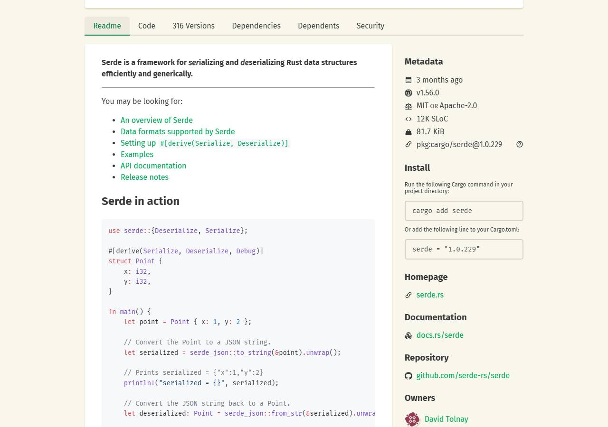
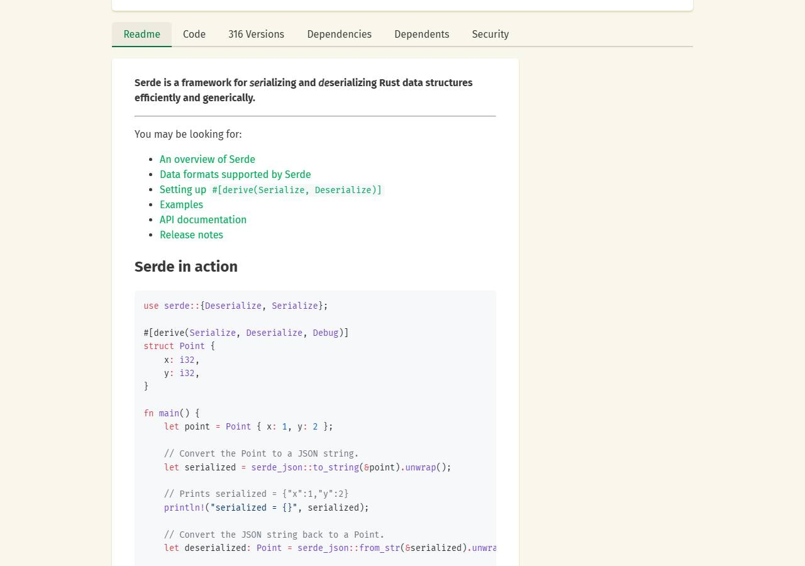

crates.ioverified
hide the right sidebar with metadata and install instructions
assertion
visible("div.sidebar.svelte-19k0tw6") > 0 before AND == 0 after
tested on https://crates.io/crates/serde · @match *://crates.io/crates/serde*
Install v1.0.0
checked just now